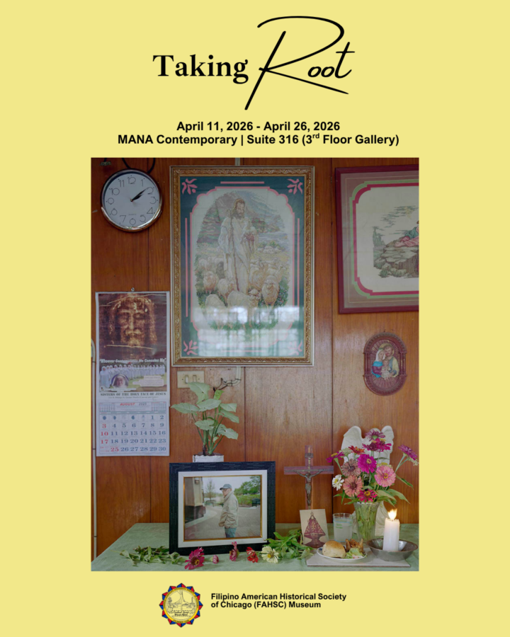

Taking Root: A Filipino American Art Exhibition
Organized by The Filipino American Historical Society of Chicago (FAHSC) Museum, Taking Root is a group exhibition that explores the tangled, yet intermeshed, layers of Filipino American identity, memory, migration and lived experience.
The exhibition aims to center Filipino American artists who astutely reimagine and confront the state of being uprooted and taking root in a strange place called America.
In these precarious times, these artists address the vulnerability, as well as the adaptability, of rooting oneself in America through painting, photography and sculpture.
The exhibition’s title “Taking Root” exemplifies how Filipino Americans flourish and thrive as they re-connect with their cultural identity and history.
Taking Root: A Filipino American Art Exhibition will be displaying artworks from these five Filipino American artists:
Set Gozo
Lawrence Leopoldo
Peter Stover